要旨
本稿は、漢訳仏典および日本撰述仏教文献を対象に、文献間の近接を意味的近接、文体・語彙的近接、明示的参照マーカーに基づく近接の三層に分けて可視化する探索的枠組みを提案する予備的研究である。仏教文献に対する word embedding、並行句検出、多言語意味類似度、stylometry の既存研究を踏まえ、本稿は日本仏教の宗派別参照テキスト群を対象とする探索的地図として位置づける。対象には、浄土系、法華系、真言系、禅系、華厳系、法相系に関係する15テキスト、433チャンクを用いた。各本文を text-embedding-3-large で埋め込み、本文単位のベクトルはチャンクベクトルの平均として得た。さらに、宗派別参照群重心、訳者重心、チャンク分布、チャンク近傍混合率を計算したうえで、阿弥陀経二訳と『教行信証』を対象に、意味層、文字n-gramによる文体・語彙層、経名・訳者名・固定句辞書による明示マーカー層からなる三層参照源混合地図（source-mixture map）を試作した。加えて、漢訳『解深密経』と84000英訳 The Teaching Explaining the Thought（Toh 106）を用い、言語を越えて同一経典性が近傍関係として現れるかを小規模に検証した。
結果として、阿弥陀経とその玄奘訳別訳である『稱讃淨土佛攝受經』は、意味埋め込みでは高い類似度を示し、文字単位TF-IDFでは低い類似度を示した。この対照は、意味的に近いことと文体・語彙的に近いことが同じではないことを示す。チャンク分布では、本文平均点だけでは見えにくい各経典内部の広がりと重なりが確認でき、とくに阿弥陀経二訳は比較対象ペアのなかで一貫して高いチャンク近傍混合率を示した。親鸞文献側のパイロット分析では、『入出二門偈』に玄奘訳『称讃浄土経』の明示的参照が確認され、『教行信証』では阿弥陀経二訳のどちらか一方だけに還元しにくい重層的な近さが見られた。三層参照源混合地図では、『教行信証』の意味層は無量寿経・観無量寿経・阿弥陀経二訳への近さを連続的に示す一方、文体・語彙層はより均された分布を示し、明示マーカー層は未検出区間を多く含みつつ無量寿経系マーカーが目立った。これは、意味的近さ、文体・語彙的近さ、引用・学習経路としての近さを別レイヤーとして読む必要を示す。浄土三部経や真言系密教経典には、投入した参照テキスト群の範囲で一定の主題的まとまりが見られたが、禅系については経典のみでは宗派的伝統の差を十分に表現できなかった。多言語パイロットでは、Toh 106英訳の最近傍が漢訳『解深密経』となった。ただし、これは英訳1本によるパイロット検証であり、同一経典判定の性能評価には対応ペアの拡張が必要である。
キーワード: 漢訳仏典、宗派比較、意味埋め込み、阿弥陀経、玄奘、鳩摩羅什、多言語比較、仏教文献情報学
はじめに
問題設定
日本仏教の各宗派は、それぞれ特定の経典、祖師文献、儀礼的読誦テキストを重視してきた。たとえば浄土系では浄土三部経および祖師文献が重要であり、真言宗では大日経、金剛頂経、理趣経などの密教経典が中心的な位置を占める。一方、禅宗では般若心経、金剛経、維摩経などが参照されるが、宗派的特徴は経典そのものよりも語録、清規、祖師文献に強く現れる可能性がある。
近年の大規模言語モデルおよび埋め込みモデルは、テキストの意味的近さを高次元ベクトルとして表現できる。本研究では、この手法を仏教文献に適用し、宗派ごとの参照テキスト群の配置を可視化できるかを検討する。あわせて、阿弥陀経の異訳や同一訳者の複数テキストを用い、意味的近さと翻訳文体の差がどのように現れるかを予備的に確認する。さらに、親鸞文献を対象に、意味的に近いこと、文体的に近いこと、引用・学習経路として近いことが同じではない点をチャンク単位で可視化する。漢訳仏典と84000 Reading Roomで公開されている英訳も対照し、意味埋め込みが言語を越えた同一経典性をどの程度拾えるかを試験的に確認する。
関連研究と本稿の位置づけ
仏教文献研究では、SAT、CBETA、84000 Reading Room、BDRC などのデジタル資源の整備により、大規模な本文比較、異訳比較、引用・並行句探索が可能になりつつある[1, 2, 3, 10]。漢訳仏典に対しては、訳者・時代・文体の差を文字n-gram、助字、虚詞、PCA、クラスタリングなどによって扱う stylometry 研究が行われてきた[21, 22]。これらは、一般的な著者判定研究[18, 19]や漢訳仏典の語彙研究資源[20]とも接続し、訳者差や翻訳年代の検討に文字特徴・文法的特徴が有効であることを示している。
また、仏教文献に対する埋め込み表現の応用も進んでいる。CBETA漢文仏典を対象とした word embedding 研究では、仏教学研究向けの評価セット、年代・訳者・部類別の語彙モデル、語義推定、核心概念抽出などが検討されている[23]。Buddhist Sanskrit を対象とする embedding 評価研究もあり[26]、仏教文献に対する埋め込み表現の応用自体を、本稿の新規性として主張することはできない。
引用・参照関係についても、漢訳仏典の並行句検出や intertextuality 探索には先行研究がある。Nehrdich は continuous word representations と大規模近傍探索を用いて漢訳仏典の並行箇所を検出する方法を示しており[24]、DharmaNexus などのツールも仏教文献間の intertextuality 探索を進めている[27]。本稿のチャンク近傍混合率や橋渡しチャンクは、こうした大規模並行句検出を置き換えるものではなく、文献全体の意味的近接と部分的重なりを探索するための予備的な指標である。
多言語研究においても、漢訳仏典と古典チベット語仏典の cross-linguistic semantic textual similarity が検討されており[25]、近年のプレプリントではPali、Sanskrit、Buddhist Chinese、Tibetan を対象とする多言語検索・機械翻訳・意味検索の基盤も提案されている[28]。したがって、本稿の84000英訳と漢訳『解深密経』の比較は、多言語対応の初提示ではなく、既存の多言語 Buddhist NLP の流れに接続する小規模パイロットである。
以上を踏まえると、本稿の貢献は、埋め込み手法そのものの初適用ではない。本稿の特色は、日本仏教の宗派別参照テキスト群を、分類対象ではなく探索地図として意味空間上に配置し、本文平均ベクトル、チャンク分布、チャンク近傍混合率、異訳比較、親鸞文献の引用・参照指標を一つの予備的枠組みに統合する点にある。さらに本稿では、意味的近接、文体・語彙的近接、引用・参照的近接を同じチャンク列上で分離し、そのズレを解釈対象とする三層参照源混合地図を試験的に構築する。ただし現段階では、特定の訳者判定モデルや宗派分類器を提示するものではない。中心命題は、意味埋め込みは内容・主題的近接を探索するには有効だが、宗派的伝統、訳者差、引用経路を精密に判定するには、文体特徴量および引用・参照情報を別レイヤーとして導入する必要がある、という点にある。
本稿の目的は、宗派分類の正解モデルを作ることではない。むしろ、各宗派が参照するテキスト群を意味空間上に置いたとき、どのような近接関係や解釈上の問題が現れるかを把握することである。
研究課題
本稿では、以下の五つの問いを設定する。
- 意味埋め込みによって、浄土三部経や真言系密教経典のような主題的まとまりを確認できるか。
- 宗派ごとの参照テキスト群を重心として可視化した場合、投入テキスト群の主題的近接をどの程度表現できるか。
- 阿弥陀経の異訳および同一訳者の複数テキストを比較したとき、意味の近さと翻訳文体の差を区別できるか。
- 『教行信証』の各チャンクは、意味層、文体・語彙層、明示マーカー層で、浄土三部経および阿弥陀経二訳へどのように異なる近さを示すか。
- 漢訳仏典と84000英訳を比較したとき、同一経典性は言語差を越えて近傍関係として現れるか。
データ
本文は主にSAT大正新脩大藏經テキストデータベースから取得した。『顯淨土眞實教行證文類』については、浄土真宗本願寺派総合研究所『浄土真宗聖典』聖教データベースを利用した。一部の検証用テキストには、全文ではない既存取得本文を用いた。本稿で用いたテキスト数は15、チャンク数は433である。多言語パイロットでは、SAT由来の漢訳『解深密経』と、84000 Reading Roomで公開されている The Teaching Explaining the Thought（Toh 106）英訳を用いた。84000本文は研究用キャッシュとして扱い、本文そのものは本稿に転載しない。原本文の再配布を避けるため、公開する場合は取得手順、前処理スクリプト、チャンクID、類似度行列、図生成コードなどの派生情報を中心とする。
親鸞文献における阿弥陀経二訳の参照分析では、上記コーパスとは別に、真宗聖典検索サイト所収の『入出二門偈』該当頁も参照した。この追加資料は宗派別マップ全体の平均ベクトルには組み込まず、経名・訳者名の明示、訳語・句の指標、ならびに『教行信証』チャンクと阿弥陀経二訳チャンクの近傍関係を確認するために用いた。
| 使用ラベル | テキスト | ID・出典 | 全文性 | 字数/チャンク | 備考 |
|---|---|---|---|---|---|
| 浄土系 | 佛説無量壽經 | T0360/SAT | v0取得範囲 | 10307/27 | 康僧鎧訳。浄土三部経の大経。 |
| 浄土系 | 佛説觀無量壽佛經 | T0365/SAT | v0取得範囲 | 9003/23 | 畺良耶舍訳。浄土三部経の観経。 |
| 浄土系 | 佛説阿彌陀經 | T0366/SAT | v0取得範囲 | 2368/7 | 鳩摩羅什訳。浄土三部経の小経。 |
| 浄土系 | 稱讃淨土佛攝受經 | T0367/SAT | v0取得範囲 | 4630/12 | 玄奘訳。阿弥陀経系の異訳比較レイヤー。 |
| 浄土真宗 | 顯淨土眞實教行證文類 | 聖教DB | 既存取得本文 | 78978/197 | 親鸞撰述。『浄土真宗聖典』聖教DBを利用。 |
| 法華系 | 妙法蓮華經 | T0262/既存取得 | 抜粋 | 4718/13 | 鳩摩羅什訳。序品第一相当の既存取得抜粋で、法華系評価は暫定。 |
| 法華・禅系 | 觀世音菩薩普門品 | T0262/SAT範囲 | 品単位 | 2134/6 | 鳩摩羅什訳。観音経として読まれる第二十五品。 |
| 真言系 | 大毘盧遮那成佛神變加持經 | T0848/SAT | v0取得範囲 | 10770/28 | 善無畏・一行訳。大日経。 |
| 真言系 | 金剛頂一切如來眞實攝大乘現證大教王經 | T0865/SAT | v0取得範囲 | 8342/22 | 不空訳。金剛頂経系の代表として扱う。 |
| 真言系 | 大樂金剛不空眞實三麼耶經 | T0243/SAT | v0取得範囲 | 3309/9 | 不空訳。理趣経。 |
| 禅・真言系 | 般若波羅蜜多心經 | T0251/SAT | v0取得範囲 | 1307/3 | 玄奘訳。勤行レイヤーとして扱う。 |
| 法相系 | 解深密經 | T0676/SAT | v0取得範囲 | 7082/18 | 玄奘訳。多言語パイロットの対応漢訳。 |
| 禅系 | 金剛般若波羅蜜經 | T0235/SAT | v0取得範囲 | 5909/15 | 鳩摩羅什訳。禅系参照テキスト候補。 |
| 禅系 | 維摩詰所説經 | T0475/SAT | v0取得範囲 | 12129/32 | 鳩摩羅什訳。禅系参照テキスト候補。 |
| 華厳系 | 大方廣佛華嚴經 | T0279/SAT | v0取得範囲 | 7743/21 | 實叉難陀訳。八十華厳。 |
注: 「v0取得範囲」は本実験用キャッシュで処理した範囲を示し、校訂上の全文性を保証しない。訳者名はSATおよび大正蔵目録系の表記を確認し、T0365は畺良耶舍、T0279は實叉難陀とした。
本実験は予備的なものであり、すべての大部経典を完全な全文として取得できているわけではない。表中の「v0取得範囲」は、SATまたは既存取得ファイルから本実験で処理できた範囲を意味し、必ずしも校訂上の完全本文を保証しない。特に法華経の既存取得本文は短く、全文ではない可能性が高い。また、SAT本文の再配布ではなく、実験結果の要約と派生データの確認を目的とする。取得日は、ローカルキャッシュ上では2026年6月1日から2日の作業時点である。
方法
チャンク化と埋め込み
SAT由来本文はHTMLから本文行を抽出し、表示用ボタン、画像参照、余分な空白を除いたうえで行本文を連結した。既存取得本文および聖教DB由来本文については、非空行を連結し、空白を除去した。句読点・異体字・校訂記号の厳密な正規化はまだ行っていない。したがって、今回の処理は意味埋め込み用の基礎的な前処理であり、文体分析用の正規化とは別に設計し直す必要がある。
本文は tiktoken の cl100k_base でトークン化し、既定で700トークン、100トークンの重なりによりチャンク化した。巻・品・段落などの自然境界はv0では考慮していない。各チャンクに対して text-embedding-3-large による埋め込みを作成した。同一モデル・同一本文のチャンクについてはキャッシュを利用し、再実行時にAPIを呼び直さないようにした。モデル名、トークン化、チャンク化、類似度指標などの実装用語は、付録「用語・モデル・ツール」にまとめる。
本文単位のベクトルは、当該本文に属するチャンクベクトルの単純平均として計算した。平均前のチャンクベクトル、および平均後の本文ベクトルに対して、明示的なL2正規化は行っていない。類似度計算時にはコサイン類似度を用いるため、比較時にベクトル長の影響は正規化される。
類似度と重心
本文間の類似度はコサイン類似度によって計算した。宗派別参照群重心は、当該宗派に属する core_sutra および founder_text の本文ベクトルの平均として定義した。ここで core_sutra は中心経典、founder_text は祖師文献を表す作業用ラベルである。訳者重心は、同一訳者に属する複数テキストの本文ベクトルの平均として定義した。ただし、今回の訳者重心はサンプル数が少ないため、可視化上の補助線として扱う。
三層スコアと三層参照源混合地図
本稿では、阿弥陀経二訳および親鸞文献を読むための試験的な枠組みとして、意味層、文体・語彙層、明示マーカー層の三層を分ける（図1）。この三層を同じ対象チャンク列に重ねて表示する図を、本稿では三層参照源混合地図（source-mixture map）と呼ぶ。タイトルおよび問題設定でいう引用・参照層は、現段階では経名・訳者名・固定句辞書による明示マーカー層として操作化する。中心命題は、意味的に近いこと、文体・語彙的に近いこと、引用・学習経路として近いことは同じではない、という点である。
チャンク \(a_i\) とチャンク \(b_j\) の間に、三種類のスコアを定義する。意味スコア \(S_{ij}\) は、text-embedding-3-large によるチャンク埋め込みのコサイン類似度である。文体・語彙スコア \(T_{ij}\) は、2から5文字の文字n-gram TF-IDF によるコサイン類似度である。ここでTF-IDF は、『教行信証』チャンクと四参照源チャンクを合わせた集合に fit した。したがって、本稿の文体・語彙層は厳密な stylometry ではなく、語彙・表記的近接を捉えるための初期的な操作化である。明示マーカースコア \(C_i(s)\) は、経名、訳者名、固定句、阿弥陀経二訳に特徴的な語句、浄土三部経に関わる語句を辞書として用い、対象チャンク内のマーカー出現を参照源 \(s\) ごとに数えた予備的指標である。これは引用・参照関係そのものの完全検出ではなく、明示的マーカーに基づく探索的な proxy である。
『教行信証』の三層参照源混合地図では、参照源を無量寿経、観無量寿経、羅什訳阿弥陀経、玄奘訳『稱讃淨土佛攝受經』の四つに限定した。参照源 \(s\) に属するチャンク集合を \(C_s\) とし、対象チャンク \(i\) から参照源 \(s\) への意味層スコアと文体・語彙層スコアを、それぞれ \(m_i^S(s)=\max_{j\in C_s} S_{ij}\)、\(m_i^T(s)=\max_{j\in C_s} T_{ij}\) とした。この最大類似度方式は、各対象チャンクに対して参照源内の最も近い候補を探索するために用いたが、参照源のチャンク数が多いほど高い値を取りやすい可能性があるため、絶対的寄与の推定ではなく探索的な相対指標として扱う。
意味層と文体・語彙層の参照源重みは、softmax によって四参照源内の相対重みに変換した。意味層では \(\tau_S=0.04\)、文体・語彙層では \(\tau_T=0.025\) を用いた。数値安定化のため、実装では各行の最大値を差し引いてから指数化したが、スコアの標準化やz-score化は行っていない。
明示マーカー層では、辞書マーカーの出現数を参照源別に正規化し、マーカーが検出されないチャンクは「未検出」とした。1チャンク内に複数参照源のマーカーが出た場合は、出現数に比例して重みを分けた。意味層と文体・語彙層は7チャンク幅の移動平均、明示マーカー層は9チャンク幅の移動平均で表示した。各層の重みは、同一層内で参照源間の相対的な近さを見るための値であり、層を越えて数値を直接比較するものではない。また、意味層と文体・語彙層では四参照源内で必ず重みが配分されるため、四参照源以外に由来するチャンクにも「その他」カテゴリはまだ導入していない。
| 参照源 | マーカー例 | 種別 |
|---|---|---|
| 無量寿経 | 無量壽、法藏、本願、四十八願、願生、安樂、正覺 | 経名・教義語 |
| 観無量寿経 | 觀無量壽、韋提希、頻婆娑羅、十六觀、日想觀、水想觀、九品 | 経名・固有名 |
| 羅什訳阿弥陀経 | 阿彌陀經、阿彌陀、舍利弗、執持名號、一心不亂、恒河沙、極樂 | 経名・固定句 |
| 玄奘訳称讃浄土経 | 稱讃淨土／稱讚淨土、稱讃淨土經／稱讚淨土經、玄奘、舍利子、恒河沙／殑伽沙、慈悲加祐、攝受法門、百千倶胝 | 経名・訳者名・固定句 |
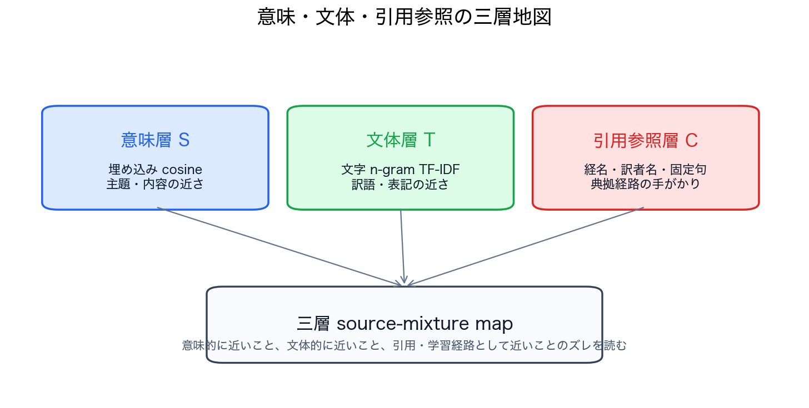
可視化と対照実験
本文ベクトル、宗派別参照群重心、訳者重心を同一空間に配置し、2次元表示にはPCAを用いた。PCAの乱数シードは random_state=0 とした。本文平均点マップにおける第1軸・第2軸の寄与率は、それぞれ23.3%、18.7%であり、2軸合計で42.0%である。阿弥陀経二訳については、意味埋め込みに加えて文字単位TF-IDFも計算した。文字単位TF-IDFでは2から5文字のn-gramを用いた。これは、意味的近さではなく、語彙選択や表記の差を捉えるための対照分析である。
平均ベクトルだけでは、長い経典や複数主題を含む文献の内部的な広がりが見えなくなる。そこで、主要テキストについてはチャンク単位の埋め込みをPCAで2次元表示し、各テキストのチャンク群に対して1標準偏差楕円を重ねた。主要チャンク分布図における第1軸・第2軸の寄与率は、それぞれ6.9%、4.4%であり、2軸合計で11.4%である。
また、2次元投影の重なりは歪みを含むため、元の高次元埋め込み空間で、あるテキストのチャンクのtop-k近傍に相手テキストのチャンクがどの程度入るかを「チャンク近傍混合率」として計算した。二つのテキストA、Bのチャンク集合を \(C=A\cup B\) とし、各チャンク \(c\in C\) について、同一チャンク自身を除いたtop-k近傍 \(N_k(c)\) を求める。\(N_k(c)\) のうち、\(c\) と異なるテキストに属するチャンクの割合を \(r(c)\) とし、混合率を \(M(A,B)=|C|^{-1}\sum_{c\in C} r(c)\) と定義した。本文中では特に断らない限り \(k=5\) を用いる。
多言語パイロット
多言語比較では、84000 Reading Room の The Teaching Explaining the Thought（Toh 106）をHTMLから抽出し、SAT由来の漢訳『解深密経』（T0676）と比較した。対照群として、金剛経、維摩経、般若心経、阿弥陀経の漢訳を加えた。評価は、84000英訳の本文ベクトルから見た漢訳テキストの最近傍順位によって行った。
結果
宗派別参照テキスト群の意味配置
図2に、本文ベクトルおよび訳者重心をPCAで2次元表示した結果を示す。浄土系参照テキストは左上方向に比較的近く配置され、真言系密教経典は下方向にまとまる傾向が見られる。一方、禅系の経典のみからは、曹洞宗・臨済宗・黄檗宗の伝統差は明確には出なかった。これは宗派差が存在しないという意味ではなく、今回投入した経典層だけでは宗派的伝統を表す特徴が不足していることを示す。
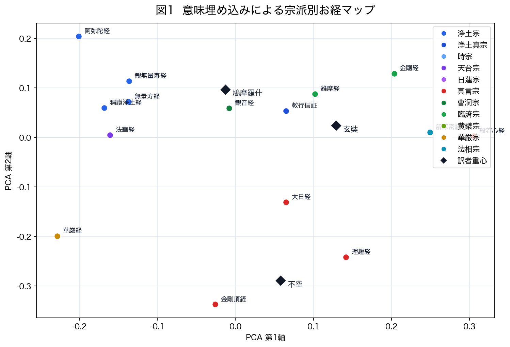
チャンク分布と広がり
図3は、本文平均点ではなく、各本文を構成するチャンク群を点として表示したものである。楕円は各テキストの1標準偏差範囲を表す。平均点マップでは一点に集約されるテキストも、チャンク単位では主題の広がりや他テキストとの部分的重なりを持つことが分かる。特に、教行信証は引用や教義的総合を含むため、チャンク分布の広がりが大きい。
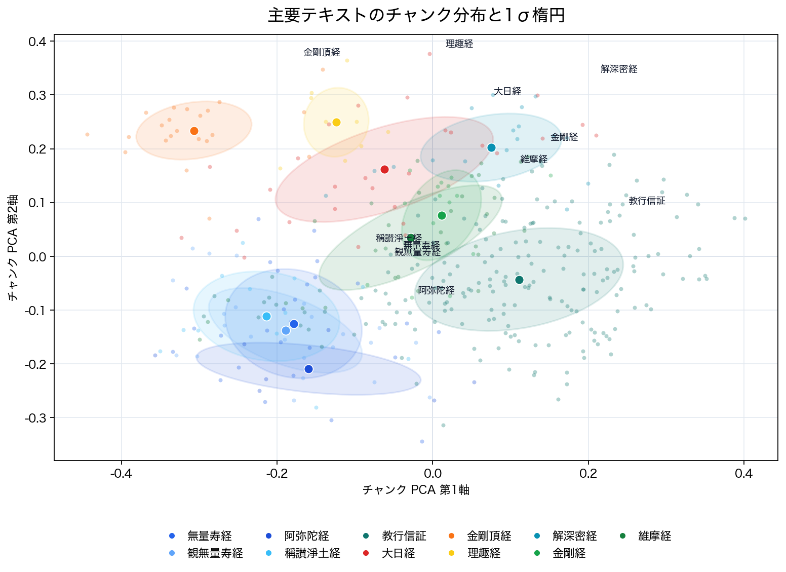
図4は、代表的な組み合わせを局所的にPCA表示したものである。阿弥陀経二訳では、平均点だけでなくチャンク分布にも重なりが見られる。一方、真言系密教経典や般若・法相・禅系対照では、平均点の近さと分布の形が一致しない場合があり、本文全体を一点に潰すことの情報損失が確認できる。
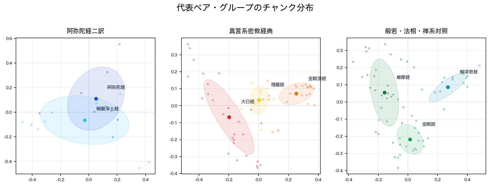
高次元空間で計算したチャンク近傍混合率を図5に示す。値が大きいほど、相手テキストのチャンクが近傍に混ざりやすい。阿弥陀経二訳は0.37と高く、異訳間で分布が混ざる傾向が確認できる。対照的に、阿弥陀経と理趣経のような主題差の大きい組み合わせでは混合率が低い。
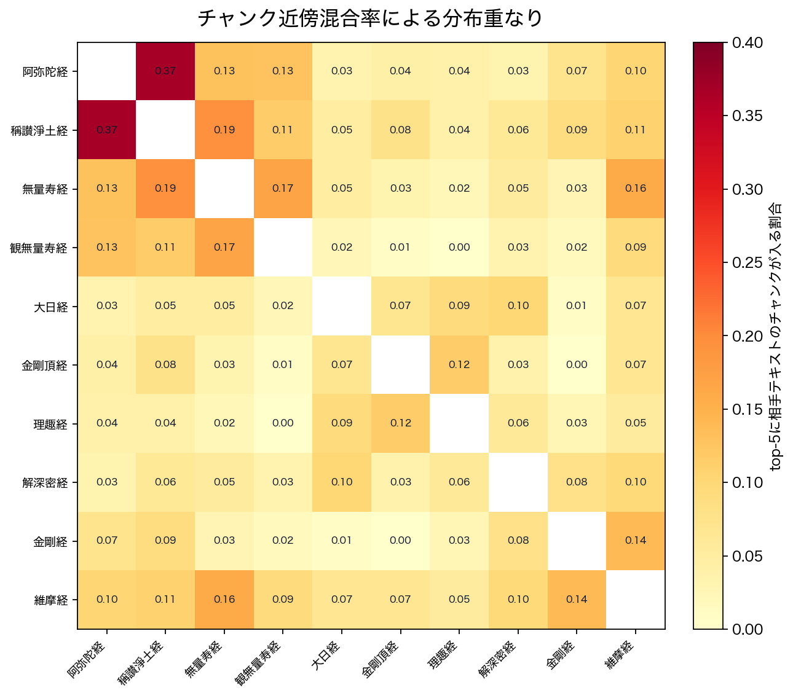
図6は、本文平均ベクトルの類似度とチャンク近傍混合率を同時に見たものである。右上に位置する阿弥陀経二訳は、平均点も近く、チャンク分布も強く混ざっている。一方、教行信証と浄土三部経は本文平均ベクトルでは近いが、チャンク近傍混合率は低めである。これは、教行信証が三部経を根拠として強く参照しつつも、本文全体としては引用、注釈、教義的論述を含む大きな複合文献であり、全チャンクが三部経チャンクと一様に混ざるわけではないことを示す。
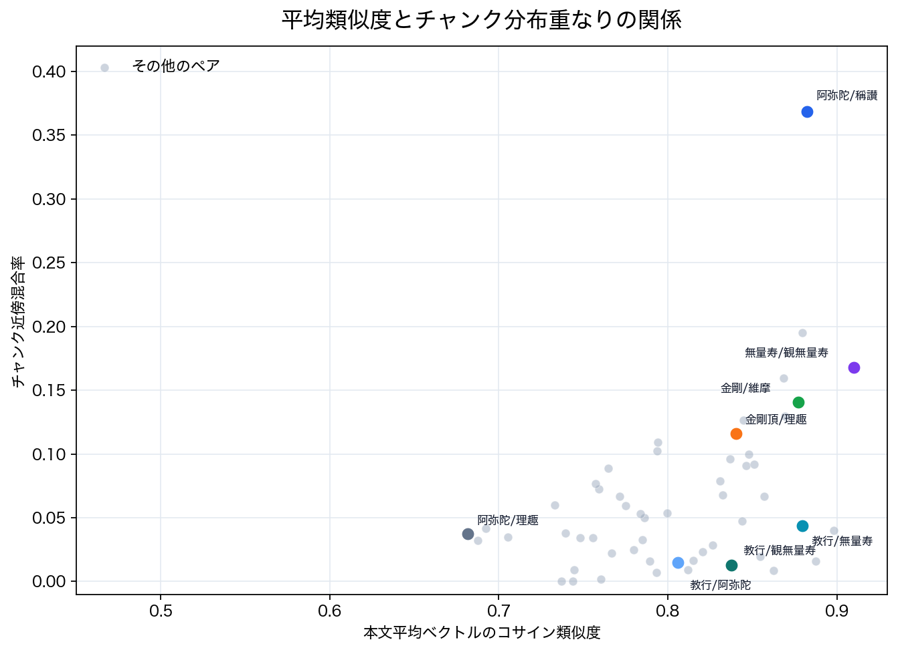
表3に、阿弥陀経二訳のチャンク近傍混合率をtop-k別に示す。kを1、3、5、10に変えても、阿弥陀経二訳は今回比較した55ペアのなかで最大の混合率を示した。ただし、ラベルランダム化による完全混合参照分布の平均は観測値より高い。これは、この混合率が「完全にラベルがランダムに混ざるほど大きくなる」指標であり、通常の有意差検定として単純に読むべきではないことを意味する。したがって本稿では、このラベルランダム化を通常の有意差検定ではなく、ラベルが意味構造と独立に割り当てられた場合の完全混合参照として用い、主要な解釈は実テキストペア間の相対順位とtop-k感度に基づける。
| top-k | 観測混合率 | 55ペア中順位 | 完全混合参照平均 | 完全混合参照分布の95%範囲 |
|---|---|---|---|---|
| 1 | 0.1579 | 1 | 0.4897 | 0.2105–0.7368 |
| 3 | 0.2632 | 1 | 0.4911 | 0.3333–0.6140 |
| 5 | 0.3684 | 1 | 0.4911 | 0.3787–0.5789 |
| 10 | 0.4474 | 1 | 0.4908 | 0.4263–0.5421 |
表4に、代表的な組み合わせについて、最も近いチャンクペアを示す。本文の転載を避けるため、チャンクIDと類似度のみを示した。教行信証と三部経の組み合わせでは、橋渡しチャンクの類似度は0.71から0.80程度と高い。したがって、三部経との部分的対応は確かに現れているが、混合率は低く、教行信証全体が三部経そのものと同じ分布になるわけではない。
| ペア | 最近接チャンクペア | チャンク類似度 | 本文類似度 | 混合率 |
|---|---|---|---|---|
| 阿弥陀/稱讃 | T0366 0005 / T0367 0010 | 0.7672 | 0.8825 | 0.3684 |
| 教行/無量寿 | KGS 0002 / T0360 0004 | 0.7969 | 0.8797 | 0.0438 |
| 教行/観無量寿 | KGS 0088 / T0365 0002 | 0.7095 | 0.8375 | 0.0127 |
| 教行/阿弥陀 | KGS 0098 / T0366 0005 | 0.7250 | 0.8058 | 0.0147 |
| 無量寿/観無量寿 | T0360 0021 / T0365 0008 | 0.7660 | 0.9102 | 0.1680 |
| 金剛頂/理趣 | T0865 0000 / T0243 0000 | 0.8176 | 0.8405 | 0.1161 |
| 金剛/維摩 | T0235 0004 / T0475 0022 | 0.7235 | 0.8770 | 0.1404 |
| 阿弥陀/理趣 | T0366 0005 / T0243 0007 | 0.5900 | 0.6816 | 0.0375 |
主要テキスト間の類似度を図7に示す。阿弥陀経、玄奘訳別訳、無量寿経、観無量寿経の近接が確認できる。また、大日経、金剛頂経、理趣経の間にも比較的高い類似度が見られる。
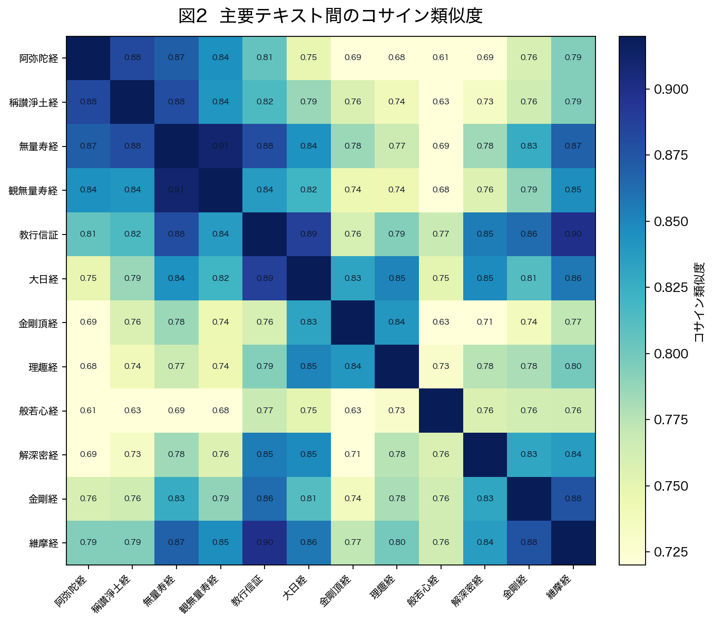
阿弥陀経二訳
鳩摩羅什訳『佛説阿彌陀經』と玄奘訳『稱讃淨土佛攝受經』を比較したところ、意味埋め込みでは高い類似度を示した。一方、文字単位TF-IDFでは低い類似度となった（図9）。三層地図の観点から見ると、阿弥陀経二訳は、意味層では強く対応するが、文体・語彙層では距離を持つ基準ケースである。
図8に、宗派別参照群コーパス上で再計算した阿弥陀経二訳の三つの指標を示す。本文平均ベクトルの意味類似度は0.8825と高い。一方、同じ本文に対する文字n-gram TF-IDF 類似度は0.1833にとどまる。チャンク近傍混合率は0.3684であり、比較対象ペアのなかでは最大である。したがって、阿弥陀経二訳は、同内容性が意味層と分布層に現れる一方、訳語・表記の差が文体・語彙層に残る例として読める。
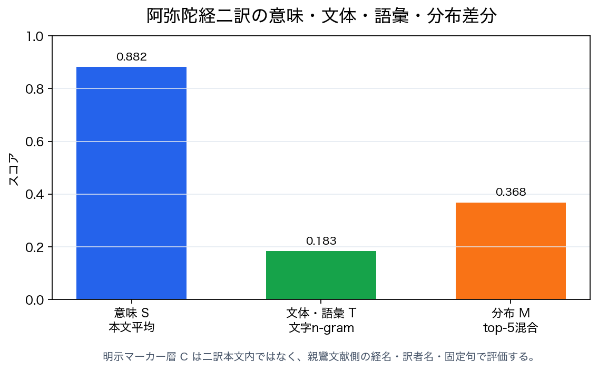
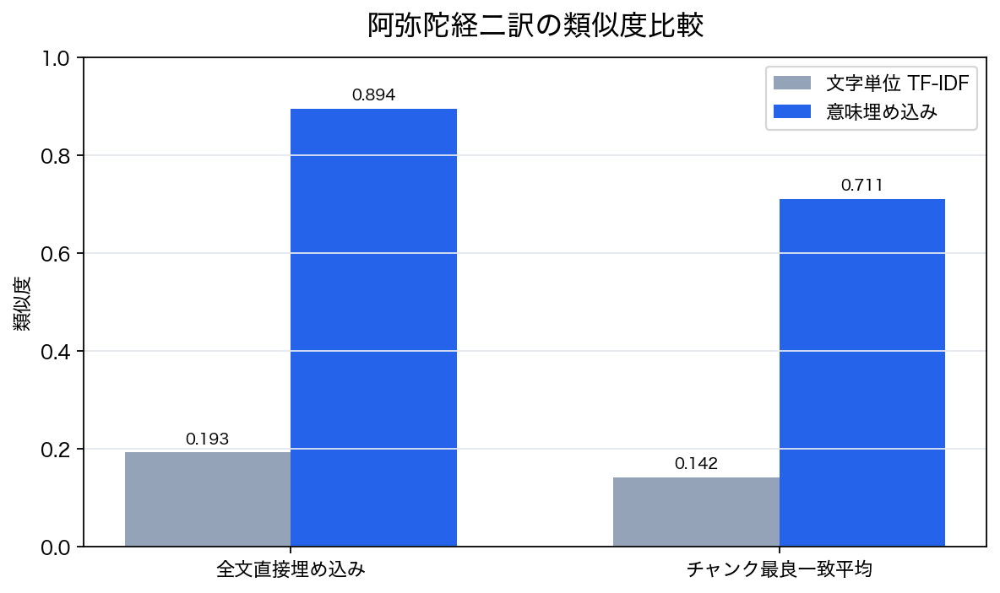
図9の「全文直接埋め込み」値0.8943は、阿弥陀経二訳をそれぞれ一つの入力として直接埋め込んだ先行小実験の値である。一方、表5のチャンク平均ベクトル類似度0.8825は、本稿の宗派別参照群コーパスで用いたチャンク平均方式による値である。両者は前処理単位が異なるため完全には一致しないが、いずれも意味的近接が高いことを示している。図8の文字n-gram TF-IDF 類似度0.1833も、処理済みコーパス上で再計算した値であり、先行小実験の0.1928とは前処理単位が異なる。
| 指標 | 値 | 説明 |
|---|---|---|
| 全文直接埋め込み類似度 | 0.8943 | 二訳それぞれを全文単位で直接埋め込んだ小実験の値。 |
| チャンク平均ベクトル類似度 | 0.8825 | 本稿の主分析で用いる、各チャンク埋め込み平均ベクトル同士の値。 |
| チャンク最良一致平均 | 0.7108 | 二訳間のチャンク対応に基づく平均的な近さ。 |
| 文字単位TF-IDF全文 | 0.1928 | 文字n-gramによる語彙・表記類似度。 |
| 文字単位TF-IDFチャンク最良一致平均 | 0.1424 | チャンク単位の文字特徴による近さ。 |
| 近傍テキスト | コサイン類似度 |
|---|---|
| 稱讃淨土佛攝受經 | 0.8825 |
| 無量寿経 | 0.8694 |
| 観無量寿経 | 0.8446 |
| 妙法蓮華経抜粋本文 | 0.8275 |
| 教行信証 | 0.8058 |
親鸞文献における阿弥陀経二訳
親鸞が阿弥陀経をどの漢訳、あるいはどの注釈伝統を通して読んでいたかは、意味埋め込みだけで判定できる問題ではない。鳩摩羅什訳『佛説阿彌陀經』と玄奘訳『稱讃淨土佛攝受經』は原内容が近く、意味ベクトルでは強く近接する。そのため、本稿では追加の小実験として、証拠を三層に分けた。第一に、経名・訳者名の明示である。第二に、羅什訳または玄奘訳に寄りやすい訳語・句の指標である。第三に、『教行信証』チャンクが阿弥陀経二訳のどちらのチャンクへ近いかという意味近傍である。
図10に、親鸞文献側のソース指標を示す。『入出二門偈』該当頁では、『称讃浄土経』と玄奘訳であることが明示され、玄奘訳側の讃嘆モチーフに対応する語句も検出された。一方、『教行信証』では、羅什訳側に寄る句と『称讃浄土経』の経名参照が併存する。したがって、『教行信証』については、単純に羅什訳または玄奘訳のどちらか一方に帰属させるより、三部経、異訳、法照・善導・元照などの注釈伝統が重なる文献として読む必要がある。
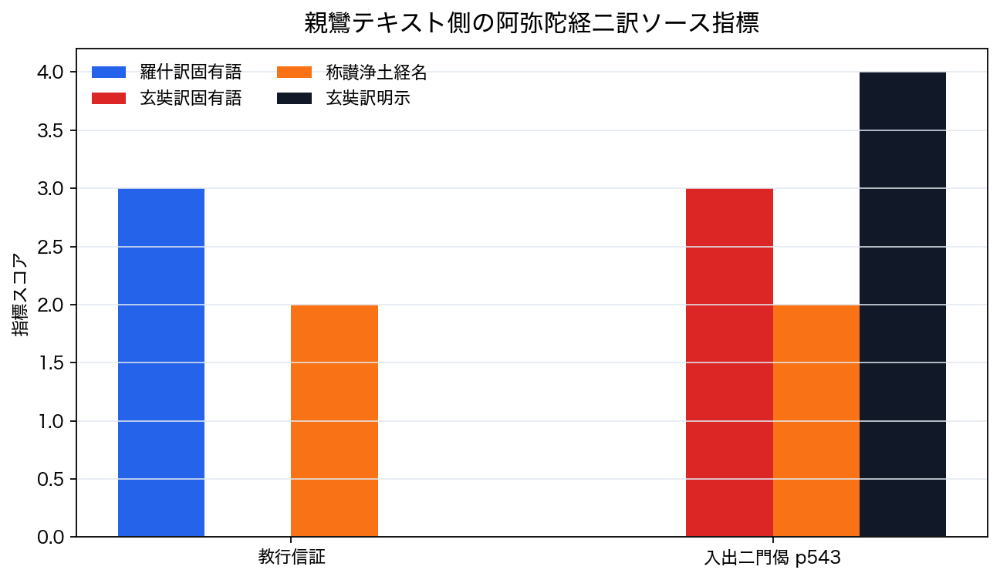
『教行信証』本文平均ベクトルから見た類似度は、羅什訳『阿弥陀経』が0.8058、玄奘訳『稱讃淨土佛攝受經』が0.8152であった。玄奘訳の方がわずかに高いが、差は0.0094にすぎない。図11のチャンク単位の推移を見ても、二訳への近さは本文全体で交錯している。これは、親鸞文献の内部に、経文引用、釈義、祖師文献引用、教義的論述が混在していることを反映していると考えられる。
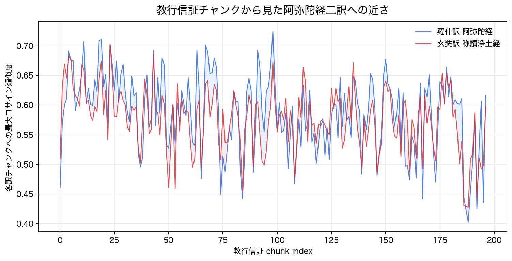
| 対象 | 羅什訳側 | 玄奘訳側 | 解釈 |
|---|---|---|---|
| 教行信証 | 固有句あり、チャンク最大0.7250 | 経名参照あり、本文平均0.8152 | 両訳・注釈伝統が重なる。単独決定は不可。 |
| 入出二門偈 p543 | 目立たず | 称讃浄土経・玄奘訳を明示 | 玄奘訳参照の強い証拠。 |
| 阿弥陀経集註 | 未投入 | 未投入 | 次段階の本命資料。経文・註記・裏書の分離が必要。 |
この小実験の要点は、阿弥陀経二訳の問題を「意味的にどちらに近いか」だけで解かないことである。意味埋め込みは、阿弥陀経二訳の同内容性をうまく捉える反面、訳語選択や引用経路の違いを薄める。親鸞文献のソース分析では、埋め込み近傍を探索の入口としつつ、経名・訳者名、固定句、注釈書の引文を別レイヤーとして重ねる必要がある。
図12は、『教行信証』197チャンクについて、無量寿経、観無量寿経、羅什訳阿弥陀経、玄奘訳『稱讃淨土佛攝受經』への三層参照源混合地図を示したものである。表8に、各層の平均重みをまとめる。意味層では無量寿経0.3705、観無量寿経0.2642、羅什訳阿弥陀経0.2135、玄奘訳称讃浄土経0.1517であった。文体・語彙層では、無量寿経0.2942、観無量寿経0.2402、羅什訳阿弥陀経0.2369、玄奘訳称讃浄土経0.2288となり、意味層より均された分布を示した。明示マーカー層では、未検出0.4958、無量寿経0.4659、観無量寿経0.0303、羅什訳阿弥陀経0.0025、玄奘訳称讃浄土経0.0054であった。
この結果は、『教行信証』が三部経を根拠とするため意味層では浄土三部経、とくに無量寿経へ近く出る一方、文体・語彙層では引用・論述・祖師文献が混ざるため参照源が均され、明示マーカー層では辞書で拾える手がかりだけが断続的に現れることを示している。ただし、明示マーカー層は小規模な辞書に依存するため、低い値は典拠関係の不在を意味しない。むしろ、意味層・文体・語彙層・明示マーカー層が一致しない箇所を、精査すべき候補として浮かび上がらせるための探索図である。
| 層 | 未検出 | 無量寿経 | 観無量寿経 | 羅什訳阿弥陀経 | 玄奘訳称讃浄土経 |
|---|---|---|---|---|---|
| 意味層 | – | 0.3705 | 0.2642 | 0.2135 | 0.1517 |
| 文体・語彙層 | – | 0.2942 | 0.2402 | 0.2369 | 0.2288 |
| 明示マーカー層 | 0.4958 | 0.4659 | 0.0303 | 0.0025 | 0.0054 |
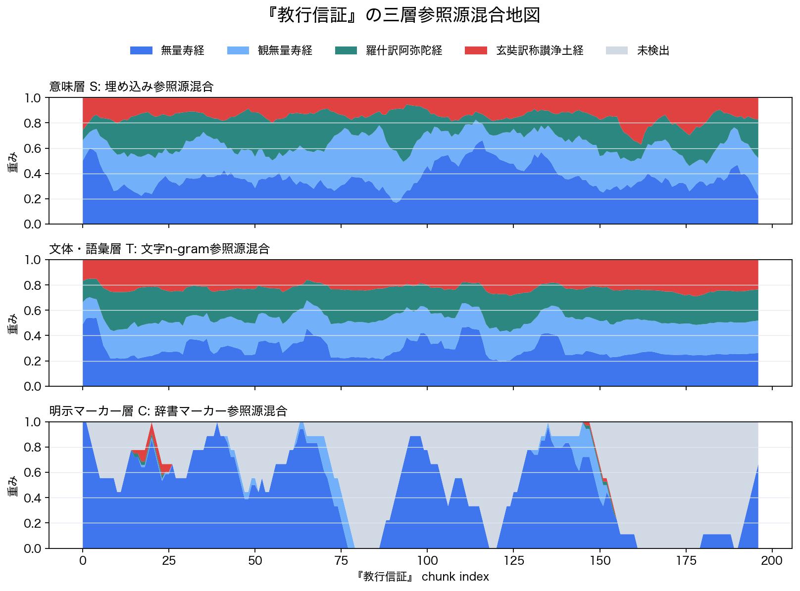
訳者重心
訳者重心は、不空、玄奘、鳩摩羅什の3種を作成した。玄奘訳『稱讃淨土佛攝受經』の近傍は、同じ玄奘訳の般若心経や解深密経ではなく、鳩摩羅什訳『阿弥陀経』および浄土系経典であった。今回の小規模コーパスでは、意味埋め込み上の近接は訳者よりも主題・内容に強く支配される傾向が見られた。ただし、訳者差の検出には、同一または近接主題の異訳ペアを増やしたうえで、文体特徴量と併用する必要がある。
| 訳者 | テキスト数 | 対象 |
|---|---|---|
| 不空 | 2 | 金剛頂経、理趣経 |
| 玄奘 | 3 | 稱讃淨土佛攝受經、般若心経、解深密経 |
| 鳩摩羅什 | 5 | 阿弥陀経、法華経、観音経、金剛経、維摩経 |
多言語比較パイロット
84000英訳 The Teaching Explaining the Thought（Toh 106）を問い合わせテキストとし、漢訳テキスト群とのコサイン類似度を比較した。表10に上位近傍を示す。
| 順位 | 近傍テキスト | コサイン類似度 |
|---|---|---|
| 1 | 解深密經（T0676） | 0.7662 |
| 2 | 維摩詰所説經（T0475） | 0.6926 |
| 3 | 金剛般若波羅蜜經（T0235） | 0.6922 |
| 4 | 般若波羅蜜多心經（T0251） | 0.6167 |
| 5 | 佛説阿彌陀經（T0366） | 0.5683 |
結果として、84000英訳の最近傍は対応する漢訳『解深密経』となった。このことは、少なくともToh 106とT0676の組み合わせでは、英訳と漢訳という言語差を越えて対応経典が最近傍になったことを示す。ただし、維摩経や金剛経も0.69台で近く、大乗経典一般の主題的近さも反映されている。したがって、同一経典判定として評価するには、対応ペアと非対応ペアを増やし、top-1 accuracy、MRR、ROC-AUC などで検証する必要がある。
考察
阿弥陀経二訳の結果は、意味埋め込みが語彙差や訳語差を越えて、内容の近さを強く捉えることを示している。これは、同一または近接する原内容の漢訳を検出する用途には有用である可能性がある。一方で、文字単位TF-IDFでは阿弥陀経二訳の類似度が低く出た。これは、文体、訳語、語彙選択、固有名詞表記の差が文字n-gram特徴に強く反映されるためである。
この結果は、仏典 word embedding 研究と漢訳仏典 stylometry の双方と接続する。意味埋め込みは、Huang and Wang が扱うような語彙・概念レベルの意味関係探索[23]を本文・チャンク単位へ拡張する可能性を持つ。一方、訳者差や時代差を論じるには、Hung, Bingenheimer, and Wiles および Bingenheimer, Hung, and Hsieh が示したような文字特徴、助字、虚詞、PCA、クラスタリングに基づく文体計量[21, 22]と併用する必要がある。
チャンク分布を併用すると、平均点の近さをより細かく解釈できる。たとえば阿弥陀経二訳は本文平均ベクトルも近いが、チャンク近傍混合率も高く、文中の部分単位でも対応する意味領域が多いと考えられる。一方、平均点が比較的近くても、分布が細長い、または一部だけ重なる場合には、主題の一部共有と本文全体の近さを区別して読む必要がある。教行信証と浄土三部経の関係はこの例であり、三部経を根拠とする文献であるため本文平均では近いが、チャンク単位では引用・釈義・論述が混在するため、部分的な橋渡しと全体分布の差を分けて読む必要がある。
浄土系と真言系では、中心的な経典群が比較的まとまりやすい傾向が見えた。ただし、これは宗派そのものを分類したというより、宗派が重視するテキスト群の主題的近接を可視化した結果である。教行信証のような祖師文献は、多数の引用や教義的総合を含むため、単一経典とは異なる振る舞いを示す可能性がある。
禅系については、経典のみでは宗派的伝統差が分かれにくかった。これは失敗というより、投入データが宗派的伝統を表す層に届いていないことを示す結果である。禅宗の比較には、碧巌録、無門関、正法眼蔵、臨済録、黄檗清規などの祖師文献・語録・規範文献を加える必要がある。
翻訳癖を扱うには、意味ベクトルとは別に、文字n-gram、助字や虚詞の頻度、文長・句構造、固有訳語の対応関係、音写語と意訳語の選択、同一サンスクリット語に対する漢訳語の揺れを特徴量として導入する必要がある。
以上を踏まえると、分析単位は三層に分けるのがよい。第一に、内容・主題・教義的近接を捉える意味マップである。第二に、訳語、助字、句法、音写語、表記、文長などを捉える文体・語彙マップである。第三に、経名、訳者名、固定句、注釈引文、祖師文献引用を捉える明示マーカーマップである。本稿は、この三層の必要性を述べるだけでなく、『教行信証』に対する三層参照源混合地図として操作化した。これにより、同じチャンク列であっても、意味層では浄土三部経への近さ、文体・語彙層では表現上の拡散、明示マーカー層では経名・訳者名・固定句の断続性が異なる形で現れることを確認した。
親鸞文献における阿弥陀経二訳の参照分析も、同じ問題を示している。『入出二門偈』のように玄奘訳『称讃浄土経』を明示する資料では、経名・訳者名そのものが強い証拠となる。一方、『教行信証』のような総合的文献では、意味ベクトルは二訳の近接を反映するものの、引用経路や注釈伝統までは自動的に分解しない。三層参照源混合地図は、この分解不能性を失敗として扱うのではなく、層間差分として可視化する。今後の分析では、経文本文、注釈引文、祖師文献引用を分け、意味層・文体・語彙層・明示マーカー層のズレがどの箇所で大きくなるかを精査することが重要である。
この引用・参照ソースマップは、並行句検出や intertextuality 探索の先行研究[24, 27]と接続しうる。ただし、本稿は大規模な並行句検出を直接実装したものではなく、平均ベクトルとチャンク分布から、どの文献間に詳細な引用・並行句探索を行うべきかを見つける入口として位置づけられる。
多言語パイロットは、意味埋め込みが言語差を越えて同一経典性を拾う可能性を示した。ただし、今回用いたのはチベット語本文そのものではなく、84000による英訳である。そのため、今後はチベット語本文、漢訳、英訳を同時に扱い、同一経典性、同一言語性、翻訳スタイルの影響を分離して評価する必要がある。この課題は、漢訳仏典と古典チベット語仏典の cross-linguistic semantic textual similarity[25]や、多言語仏教文献検索・機械翻訳基盤[28]との比較によって検証すべきである。
限界と今後の課題
本研究には、コーパスが小さいこと、大部経典の一部が全文比較ではないこと、宗派別参照群重心が単純平均であること、訳者重心のサンプル数が少ないこと、PCAによる2次元配置が可視化用に過ぎないこと、といった限界がある。チャンク分布の楕円も2次元投影上の近似であり、厳密な分布重なりの判定には高次元空間での近傍検索や分布間距離を併用する必要がある。三層参照源混合地図についても、文体・語彙層は文字n-gram TF-IDF による初期的な操作化であり、助字、虚詞、文長、句法、固有訳語の対応をまだ十分に入れていない。明示マーカー層も小規模な辞書に依存するため、マーカー未検出は典拠関係の不在を意味しない。また、意味層と文体・語彙層では四つの参照源に対する相対重みだけを示しており、「その他」に相当する未対応領域を明示的に推定していない。多言語比較についても、現段階では英訳1本と漢訳対照群によるパイロット実験であり、チベット語本文、章単位対応、複数経典ファミリーでの検証は未実施である。
今後は、SATから各経典の全文を安定して取得し、各宗派について祖師文献、語録、儀礼文、注釈書を追加する。また、意味ベクトルとは別に文体ベクトルを作成し、翻訳者、時代、日本撰述漢文の特徴を可視化する。チャンク化については、固定長チャンクだけでなく、巻・品・段落などの自然単位によるチャンク化との比較を行う。宗派別参照群重心には重み付けを導入し、中心経典、勤行テキスト、祖師文献を区別する必要がある。三層参照源混合地図は、現段階では softmax による重み付けを用いたプロトタイプであるが、将来的には未対応チャンクを許す unbalanced optimal transport や、章・巻・品の位置ペナルティを含むチャンク輸送地図へ拡張できる。多言語比較では、BDRC等で確認できるチベット語本文を加え、必要に応じて Buddhist Sanskrit embedding、DharmaNexus、MITRA などの仏教文献向け検索・埋め込み基盤との比較を行う。
親鸞の阿弥陀経理解を追う次段階では、『阿弥陀経集註』を重点資料とする。本文を単に一つのテキストとして埋め込むのではなく、経文本文、行間註、紙背・裏書、引用元と推定される注釈書を分けてデータ化する必要がある。そのうえで、羅什訳、玄奘訳、元照『阿弥陀経義疏』、善導系文献、法照系文献を参照源として並べることで、親鸞文献の「意味的近さ」と「引用・学習経路」の差をより精密に扱える可能性がある。
結論
本予備実験では、意味埋め込みを用いることで、阿弥陀経二訳のような同内容・近内容テキストの近接、および浄土系・真言系経典群の一定の主題的まとまりを確認できた。さらに、本文を平均点だけでなくチャンク分布として表示することで、各経典の内部的な広がりや部分的な重なりを観察できた。平均ベクトル類似度とチャンク近傍混合率を併用することで、本文全体の主題的近接と部分単位の分布重なりを区別して読めることも確認された。また、解深密経の多言語パイロットでは、84000英訳の最近傍が対応する漢訳となった。一方で、訳者差や宗派的伝統差を精密に捉えるには、意味埋め込みだけでは不十分である。特に訳者の癖を分析するには、文字n-gram、訳語対応、助字、句法などを用いた文体特徴量を別レイヤーとして導入する必要がある。
したがって、本研究の現段階の成果は、宗派分類器の完成ではなく、仏教文献群を探索するための三層地図の基盤を構築した点にある。既存研究における word embedding、並行句検出、cross-lingual semantic textual similarity、stylometry を踏まえると、本稿の独自性は、これらを置き換えることではなく、日本仏教の宗派別参照群、阿弥陀経二訳、親鸞文献、チャンク分布、多言語パイロットを一つの探索枠組みに接続し、意味的近接、文体・語彙的近接、明示的参照マーカーの層間差分を解釈対象にした点にある。今後、データを拡張し、意味マップ、文体・語彙マップ、明示マーカーマップを分離して重ねることで、宗派、訳者、時代、日本撰述漢文の差異をより精密に検討できると考えられる。
付録: 用語・モデル・ツール
本付録では、本稿の実験を読むために必要な実装用語を簡潔にまとめる。ここでの説明は、本実験における使用法を示すものであり、各ツールやモデルの仕様、提供状況、料金は将来変更される可能性がある。
コーパス： コーパスは、分析対象として集めた本文集合である。本稿では、SAT由来の漢訳仏典、聖教DB由来の親鸞文献、84000英訳などを、実験目的に応じて小さなコーパスとして扱った。
前処理と正規化： 前処理は、HTMLから本文を取り出す、余分な空白やボタン表示を除く、といった分析前の整形である。正規化は、異体字、句読点、校訂記号、表記ゆれなどを一定の規則で揃える処理である。本稿では意味埋め込み用の基礎的な前処理にとどめ、文体分析向けの厳密な正規化は今後の課題とした。
トークン： トークンは、モデルやトークナイザが内部処理のために本文を分割する単位であり、文字、単語、形態素と同一ではない。本稿では、チャンク長を揃えるための機械的な単位として用いた。
tiktoken と cl100k_base： tiktoken はOpenAIが公開しているPython用トークナイザであり、cl100k_base はOpenAI系モデルで用いられるエンコーディングの一つである[13]。本稿では、漢文本文を700トークン程度のチャンクへ分けるために利用した。Python環境では通常、pip install tiktoken によって導入できる。
チャンクとオーバーラップ： チャンクは、長い本文を埋め込みモデルに入力できる長さへ分割した断片である。本稿では既定で700トークンごとに分割し、隣接チャンクの間に100トークンの重なりを持たせた。オーバーラップは、境界付近の文脈が切れすぎないようにするための処理である。
埋め込みと text-embedding-3-large： 埋め込みとは、テキストを高次元の数値ベクトルに変換したものである。本稿ではOpenAI APIの text-embedding-3-large を用いた[12]。利用にはOpenAI APIキーとPython用OpenAI SDKが必要であり、モデル名は実行時引数で変更できるようにした。
埋め込み空間： 埋め込み空間は、各テキストやチャンクのベクトルが置かれる高次元の数値空間である。近くに置かれるものは、モデル上では意味や主題が近いとみなされる。ただし、近さはモデルと入力データに依存するため、文献学的な同一性や引用関係を直接証明するものではない。
OpenAI API、APIキー、SDK： OpenAI APIは、OpenAIのモデルをプログラムから呼び出すためのサービスである。APIキーは利用者の認証情報であり、公開リポジトリに含めてはならない。SDKは、PythonなどからAPIを呼び出しやすくするための公式ライブラリである。
APIトークンとキャッシュ： APIトークンは、OpenAI APIが入力処理や課金計算に用いる単位である。本稿のスクリプトでは、同じモデルと同じ本文チャンクの埋め込みを再利用できるようにローカルキャッシュを作成し、再実行時に不要なAPI呼び出しを避けた。
コサイン類似度： コサイン類似度は、二つのベクトルが同じ方向を向いている度合いを測る指標である。値が大きいほど、埋め込み空間上で近い意味領域にあると解釈する。ただし、これは引用関係や文体一致を直接示すものではない。
L2正規化： L2正規化は、ベクトルの長さを1に揃える処理である。本稿では平均ベクトル作成時には明示的なL2正規化を行わず、類似度計算時にコサイン類似度を用いて方向の近さを比較した。
重心： 本稿の重心は、複数テキストのベクトルを平均した作業上の代表点である。宗派別参照群重心は、その宗派が参照する中心経典や祖師文献の平均であり、宗派の教義的中心そのものを意味しない。
PCA： PCAはPrincipal Component Analysis（主成分分析）の略で、高次元ベクトルを少数の軸へ射影する可視化手法である[15, 16]。本稿では2次元図を作るために用いた。PCA図の軸は可視化用の軸であり、そのまま教義的・文献学的な軸を意味しない。
寄与率： PCA図の寄与率は、元の高次元データのばらつきのうち、その軸がどれだけを説明しているかを示す割合である。2軸合計の寄与率が低い場合、図は全体構造の一部だけを見せているため、高次元空間での類似度や近傍指標と併読する必要がある。
1標準偏差楕円： 1標準偏差楕円は、2次元図上でチャンク群のおおまかな広がりを示す補助線である。楕円が重なることは、可視化上の分布が近いことを示すが、高次元空間で完全に重なっていることを意味しない。
TF-IDF と文字n-gram： TF-IDFは、語や文字列の出現頻度を文書間比較に使う古典的な重み付け手法である[14]。本稿では、阿弥陀経二訳の意味的近さとは別に、文字列・語彙・表記の近さを見るため、2から5文字の文字n-gramを用いた。
stylometry（計量文体論）： stylometryは、文字、語、助字、文長、句法などの統計的特徴から、著者、訳者、時代、文体差を調べる方法である。本稿では、意味埋め込みだけでは訳者差を捉えにくいため、今後導入すべき別レイヤーとして位置づけた。
top-k近傍とチャンク近傍混合率： top-k近傍は、あるチャンクから見て類似度が高い上位k個のチャンクである。本稿のチャンク近傍混合率は、二つのテキストのチャンクを合わせたとき、各チャンクのtop-k近傍に相手テキストのチャンクがどれだけ混ざるかを平均した値である。
三層参照源混合地図（source-mixture map）： 三層参照源混合地図は、ある対象チャンクが複数の参照源のどれにどの程度近いかを、重みの混合として表示する図である。本稿では『教行信証』の各チャンクについて、無量寿経、観無量寿経、羅什訳阿弥陀経、玄奘訳称讃浄土経への近さを、意味層、文体・語彙層、明示マーカー層に分けて表示した。
softmax： softmax は、複数のスコアを合計1の重みに変換する関数である。本稿では、各『教行信証』チャンクから複数参照源への類似度を、三層参照源混合地図の重みに変換するために用いた。温度パラメータが小さいほど、最も高いスコアの参照源へ重みが集中しやすい。
optimal transport と unbalanced optimal transport： optimal transport は、一方の分布を他方の分布へ移す対応関係を、コストが小さくなるように求める方法である。unbalanced optimal transport は、分布の総量や対応しない部分が完全には一致しない場合にも使える拡張である。本稿では将来のチャンク輸送地図への拡張候補として位置づけた。
ラベルランダム化と完全混合参照： ラベルランダム化は、チャンクの位置関係はそのままに、どのテキストに属するかというラベルだけを入れ替える対照実験である。本稿では、意味構造とラベルが独立だった場合の「完全に混ざった状態」の目安として使い、通常の有意差検定としては読まない。
top-1 accuracy、MRR、ROC-AUC： top-1 accuracyは、検索結果の1位が正解だった割合である。MRRは正解が何位に出たかを平均的に評価する指標である。ROC-AUCは、正例と負例をどれだけ分けられるかをしきい値全体で見る指標である。本稿では、将来の多言語対応ペア評価に必要な指標として挙げた。
parallel句、intertextuality、cross-linguistic semantic textual similarity： parallel句は、別文献に現れる対応句・並行句である。intertextualityは、引用、参照、共有句などを含む文献間関係を指す。cross-linguistic semantic textual similarityは、異なる言語のテキスト同士が意味的にどれだけ近いかを測る課題である。
manifest、JSON、HTML： manifestは、実験対象テキストのID、題名、出典、宗派ラベルなどをまとめた目録ファイルである。JSONは、プログラムが読み書きしやすい構造化データ形式である。HTMLは、ブラウザで論文やビューアを表示するための文書形式である。
静的ビューアとGitHub Pages： 静的ビューアは、HTML、JavaScript、JSONだけで動く可視化ページである。GitHub Pagesに置けるよう、公開版データでは本文プレビューやローカルパスを除き、座標、類似度、近傍ID、出典メタデータなどの派生情報だけを残した。
SAT、聖教DB、84000： SATは大正新脩大藏經テキストデータベース、聖教DBは浄土真宗本願寺派総合研究所『浄土真宗聖典』聖教データベース、84000はチベット仏典英訳を公開するReading Roomである。本稿ではこれらを本文・対照資料の取得元として利用し、原本文そのものは公開版データに転載しない。
謝辞
本稿の改稿過程では、ChatGPT 5.5 Pro xhigh を査読者役として用い、問題設定、先行研究との位置づけ、再現性、限界の記述について有益な指摘を得た。ここに謝意を記す。
参考文献
- SAT大正新脩大藏經テキストデータベース研究会, 『SAT大正新脩大藏經テキストデータベース』, https://21dzk.l.u-tokyo.ac.jp/SAT/（2026年6月2日閲覧）
- CBETA 電子佛典基金會, CBETA Online, https://cbeta.org/（2026年6月2日閲覧）
- Buddhist Digital Resource Center, Buddhist Digital Resource Center, https://www.bdrc.io/（2026年6月2日閲覧）
- 浄土真宗本願寺派総合研究所, 『浄土真宗聖典』聖教データベース, https://j-soken.jp/ask/10831（2026年6月2日閲覧）
- 浄土真宗本願寺派総合研究所, 『浄土真宗聖典』聖教データベース（必ずお読みください）, https://j-soken.jp/ask/ask_5/640（2026年6月2日閲覧）
- 真宗大谷派（東本願寺）, 真宗聖典検索サイト『入出二門偈』, https://shinshuseiten.higashihonganji.or.jp/contents.html?id=2&page=543（2026年6月2日閲覧）
- 名古屋大学デジタルアーカイブ, 『観無量寿経集註附阿弥陀経集註』, https://da.adm.thers.ac.jp/item/n004-20230901-00882（2026年6月2日閲覧）
- 千葉隆誓, 「親鸞『阿弥陀経集註』における元照『阿弥陀経義疏』引文について」, 2014, https://buddhism.lib.ntu.edu.tw/jp/search/search_detail.jsp?seq=546211（2026年6月2日閲覧）
- 浄土宗, 『新纂浄土宗大辞典』「称讃浄土仏摂受経」, https://jodoshuzensho.jp/daijiten/index.php/%E7%A7%B0%E8%AE%83%E6%B5%84%E5%9C%9F%E4%BB%8F%E6%91%82%E5%8F%97%E7%B5%8C（2026年6月2日閲覧）
- 84000: Translating the Words of the Buddha, The Teaching Explaining the Thought, Toh 106, https://read.84000.co/translation/toh106.html（2026年6月2日閲覧）
- 84000: Translating the Words of the Buddha, Terms of Use, https://www.84000.co/documents/terms-of-use（2026年6月2日閲覧）
- OpenAI, Embeddings, OpenAI Platform Documentation, https://platform.openai.com/docs/guides/embeddings（2026年6月2日閲覧）
- OpenAI, tiktoken, https://github.com/openai/tiktoken（2026年6月2日閲覧）
- Gerard Salton and Christopher Buckley, ``Term-weighting approaches in automatic text retrieval,'' Information Processing & Management, 24(5):513–523, 1988
- I. T. Jolliffe, Principal Component Analysis, Springer, 2nd edition, 2002
- Fabian Pedregosa et al., ``Scikit-learn: Machine Learning in Python,'' Journal of Machine Learning Research, 12:2825–2830, 2011
- Jacob Devlin, Ming-Wei Chang, Kenton Lee, and Kristina Toutanova, ``BERT: Pre-training of Deep Bidirectional Transformers for Language Understanding,'' Proceedings of NAACL-HLT, 2019
- John F. Burrows, ``Delta'': a Measure of Stylistic Difference and a Guide to Likely Authorship, Literary and Linguistic Computing, 17(3):267–287, 2002, https://doi.org/10.1093/llc/17.3.267
- Moshe Koppel, Jonathan Schler, and Shlomo Argamon, ``Computational Methods in Authorship Attribution,'' Journal of the American Society for Information Science and Technology, 60(1):9–26, 2009, https://doi.org/10.1002/asi.20961
- Seishi Karashima, A Glossary of Kumarajiva's Translation of the Lotus Sutra, The International Research Institute for Advanced Buddhology, Soka University, 2001, https://glossaries.dila.edu.tw/glossaries/KKJ?locale=en（2026年6月2日閲覧）
- Jen-Jou Hung, Marcus Bingenheimer, and Simon Wiles, ``Quantitative Evidence for a Hypothesis regarding the Attribution of Early Buddhist Translations,'' Literary and Linguistic Computing, 25(1):119–134, 2010, https://doi.org/10.1093/llc/fqp036
- Marcus Bingenheimer, Jen-Jou Hung, and Cheng-en Hsieh, ``Stylometric Analysis of Chinese Buddhist Texts: Do Different Chinese Translations of the Gandavyuha Reflect Stylistic Features that are Typical for their Age?'' Journal of the Japanese Association for Digital Humanities, 2(1):1–30, 2017, https://doi.org/10.17928/jjadh.2.1_1
- Shu-Ling Huang and Yu-Chun Wang, ``Word Embedding in Buddhist Studies: On the Basis of Evaluation of Word Embedding Models,'' Journal of Digital Archives and Digital Humanities, 12:43–82, 2023, https://doi.org/10.6853/DADH.202310_(12).0003
- Sebastian Nehrdich, ``A Method for the Calculation of Parallel Passages for Buddhist Chinese Sources Based on Million-scale Nearest Neighbor Search,'' Journal of the Japanese Association for Digital Humanities, 5(2):132–153, 2020, https://doi.org/10.17928/jjadh.5.2_132
- Rafal Felbur, Marieke Meelen, and Paul Vierthaler, ``Crosslinguistic Semantic Textual Similarity of Buddhist Chinese and Classical Tibetan,'' Journal of Open Humanities Data, 8:23, 2022, https://doi.org/10.5334/johd.86
- Ligeia Lugli, Matej Martinc, Andraž Pelicon, and Senja Pollak, ``Embeddings Models for Buddhist Sanskrit,'' In Proceedings of the Thirteenth Language Resources and Evaluation Conference, pages 3861–3871, 2022, https://aclanthology.org/2022.lrec-1.411/
- Dharmamitra, DharmaNexus, https://dharmamitra.org/nexus（2026年6月2日閲覧）
- Sebastian Nehrdich et al., ``MITRA: A Large-Scale Parallel Corpus and Multilingual Pretrained Language Model for Machine Translation and Semantic Retrieval for Pali, Sanskrit, Buddhist Chinese, and Tibetan,'' arXiv preprint arXiv:2601.06400, 2026, https://arxiv.org/abs/2601.06400